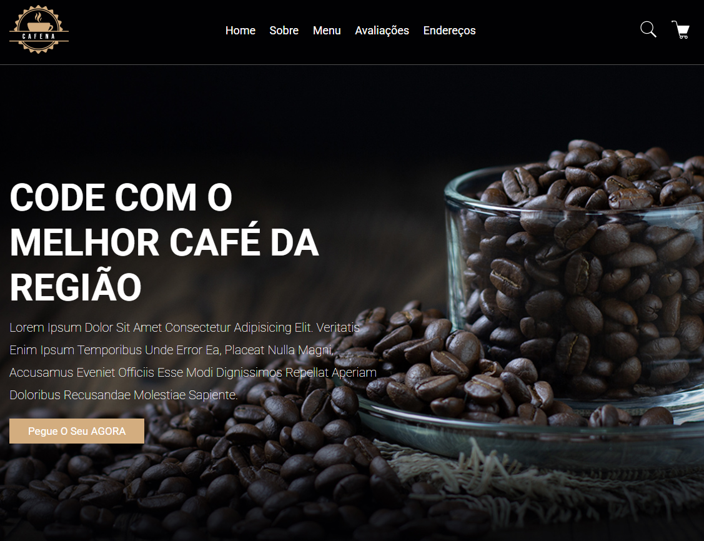

Projeto: Cafeteria DevClub
O projeto "DevClub Café" é uma página web interativa e visualmente atraente, desenvolvida para apresentar um café fictício que combina a paixão por café com a cultura de desenvolvimento de software. Através de um design moderno e responsivo, a página oferece uma experiência de usuário envolvente, destacando as principais características do café, seu menu e as avaliações dos clientes.
A estrutura da página é organizada em seções bem definidas, começando com um cabeçalho fixo que contém o logotipo do café e uma barra de navegação intuitiva, permitindo fácil acesso às diferentes partes do site, como "Home", "Sobre", "Menu", "Avaliações" e "Endereços". A seção inicial, "Home", apresenta uma imagem de fundo impactante e um texto convidativo que destaca a qualidade do café oferecido. Na seção "Sobre", os visitantes podem descobrir o que torna o DevClub Café especial, com uma descrição envolvente e uma imagem que complementa o texto. A seção "Menu" exibe uma variedade de opções de café, cada uma acompanhada de imagens atraentes e preços, incentivando os usuários a adicionar itens ao carrinho. As avaliações dos clientes são apresentadas em uma seção dedicada, onde depoimentos e classificações ajudam a construir a credibilidade do café. A página também inclui um mapa interativo, permitindo que os visitantes localizem facilmente o endereço do DevClub Café.
O design é aprimorado com o uso de fontes modernas do Google Fonts e uma paleta de cores que combina tons escuros com detalhes em dourado, criando uma atmosfera acolhedora e sofisticada. A implementação de efeitos de hover e transições suaves proporciona uma experiência interativa agradável. Este projeto não apenas demonstra habilidades em HTML e CSS, mas também reflete a capacidade de criar uma interface de usuário intuitiva e atraente, ideal para um café que deseja se destacar no mercado. Através do DevClub Café, os visitantes são convidados a explorar um espaço onde a tecnologia e o amor pelo café se encontram, promovendo um ambiente ideal para desenvolvedores e entusiastas da tecnologia.
